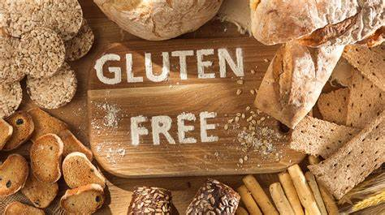

The Easiest Gluten-free Bread Recipe on the Internet
July 21, 2022

Did someone say “Fresh-baked, gluten-free bread?”
When it comes to gluten-free options, you know we’ve got your back fam. From
delicious cookies to decadent brownies and flavorful pizzas,
we’re dedicated to making all of our products and recipes more inclusive of all dietary restrictions. It was
only a matter of time until we whipped up a gluten-free (vegan and allergy-friendly) bread recipe.
Made with our Pizza Crust Baking Mix, this gluten-free bread recipe is almost as easy
as 1-2-3. Bake a loaf, or two, and use it throughout the week to make sandwiches, avocado toast, or even
mixed with some herbs and spices to make breadcrumbs. Shop our Pizza Crust Baking Mix on
partakefoods.com, and don’t forget to try more recipes using our versatile mix.
Gluten-Free Bread
Yield: One box Partake Pizza Crust Mix makes one small-sized loaf.
Ingredients:
- 1 Packet (7g) yeast
- 1 T Apple Cider Vinegar
- 1-1/4 C Water, warm (less than 105°F)
- 3 T Ground Flaxseed
- ¼ t sea salt (optional)
- 1 t sugar (optional)
- 1 Package Partake Pizza Crust Mix
Instructions:
- Combine yeast, apple cider vinegar, water, flaxseed, optional salt, and sugar in a bowl or mixer. Allow flax to hydrate for about five minutes.
- Add Partake Pizza Crust Mix to wet ingredients, mix for about 2 minutes until shiny. Dough will be sticky and wet, not like conventional bread.
- Pour dough into an oiled, sprayed, or non-stick bread pan.
- Preheat the oven to 400°F (375°F convection).
- While the oven is heating, cover the bread pan, and allow it to rise in a warm place for about 20-30 minutes (or longer, if desired).
- Place the pan into the oven, and bake for 35-45 minutes, or until an instant-read thermometer inserted in the middle reads 190-200°F.
- Remove from the oven and loaf pan and cool on a rack.
Note: Bread is easiest to handle and slice once it has sat out for 24 hours, at a minimum overnight.